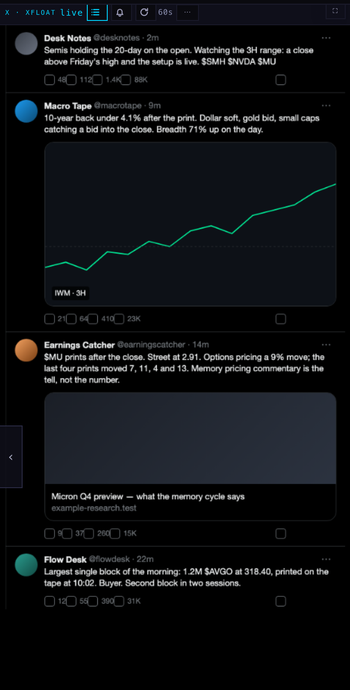
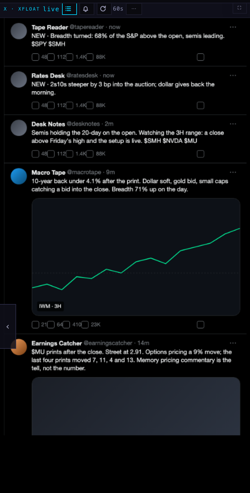
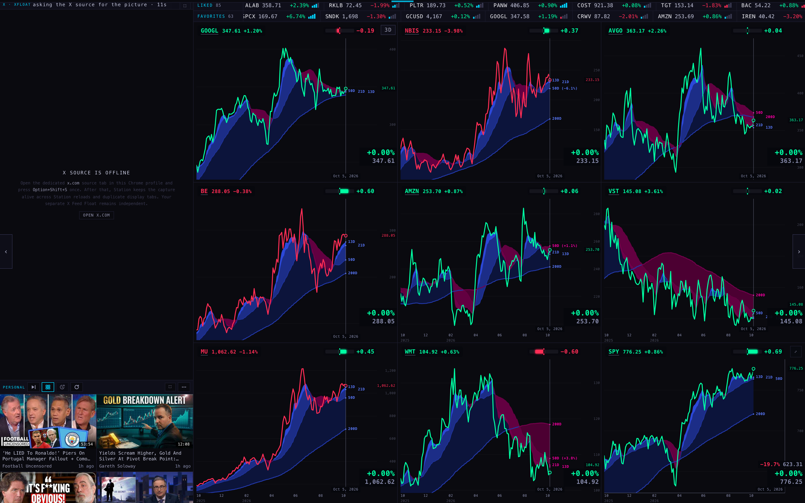
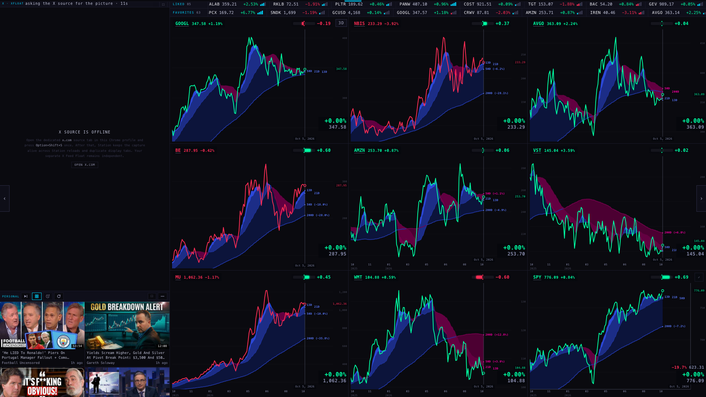
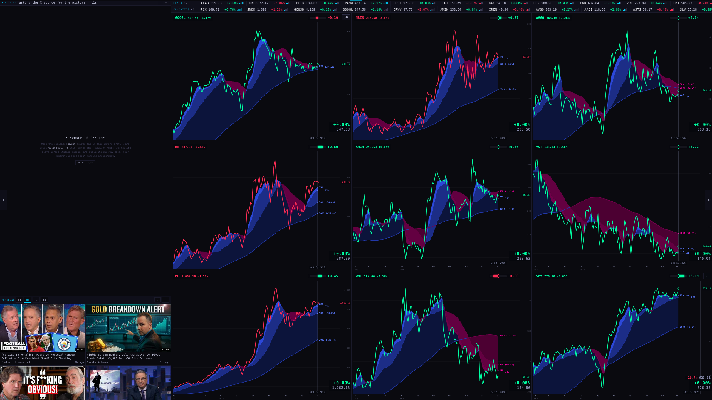
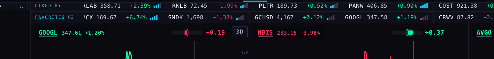
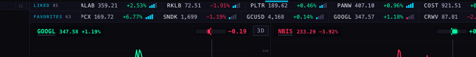
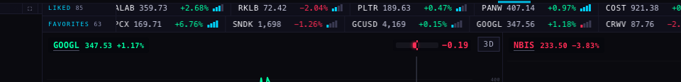
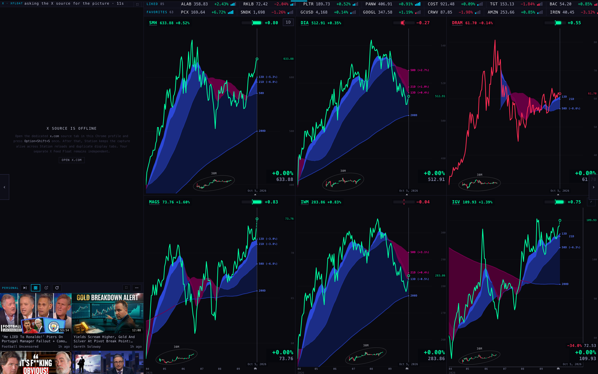
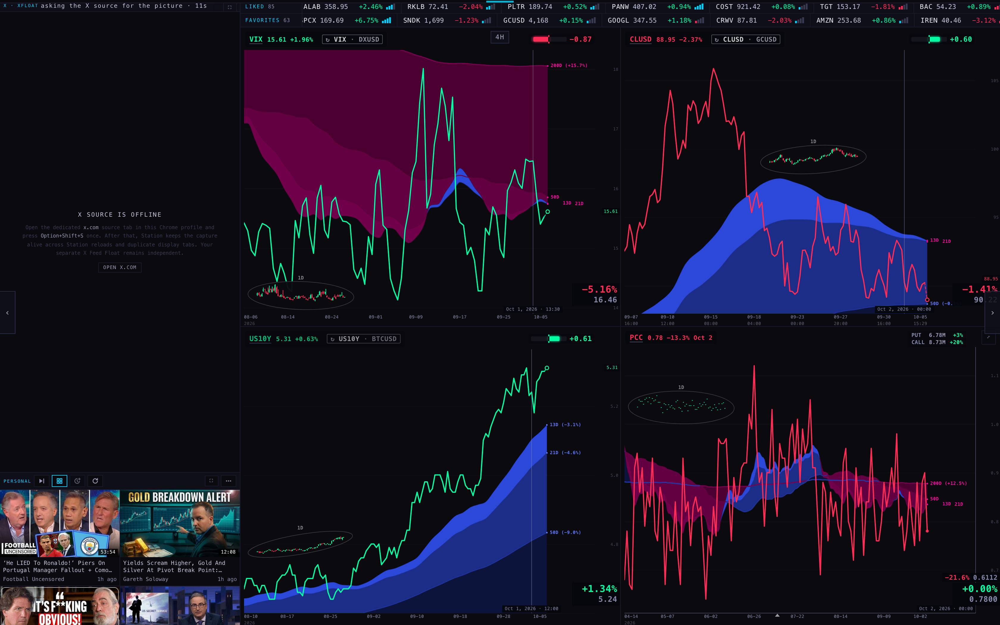
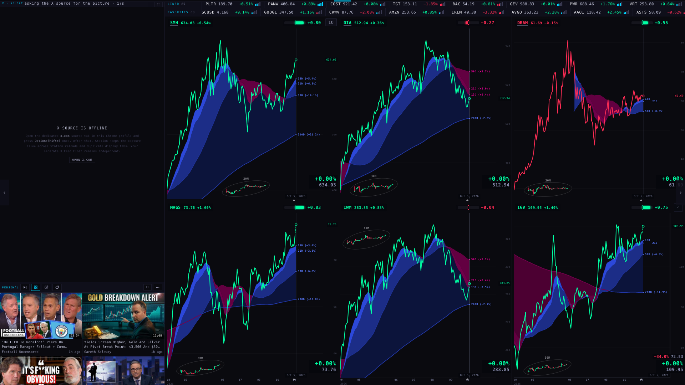
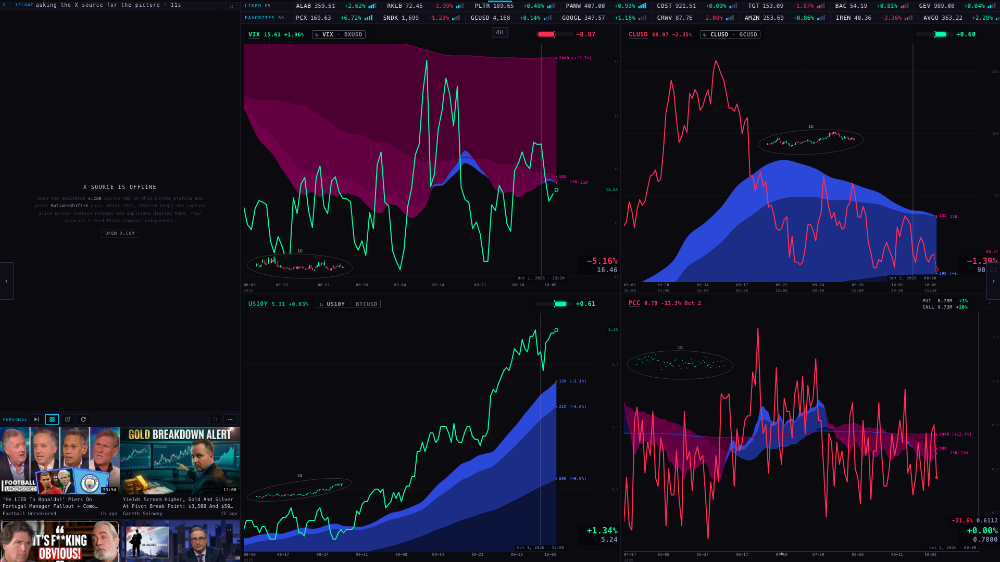
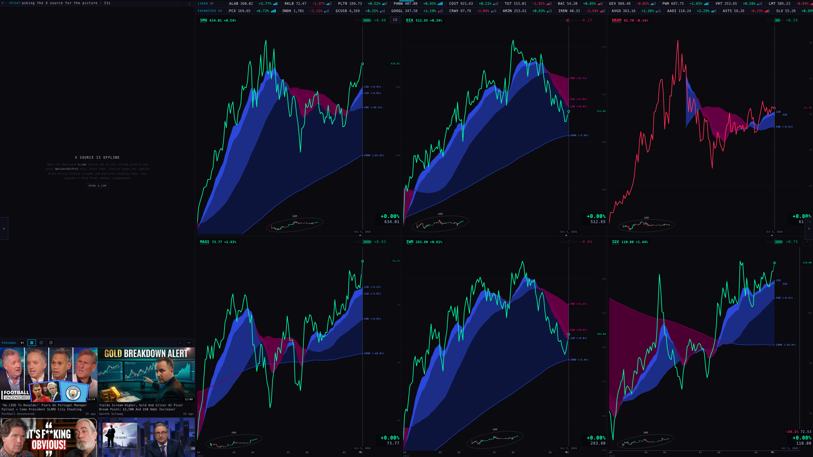
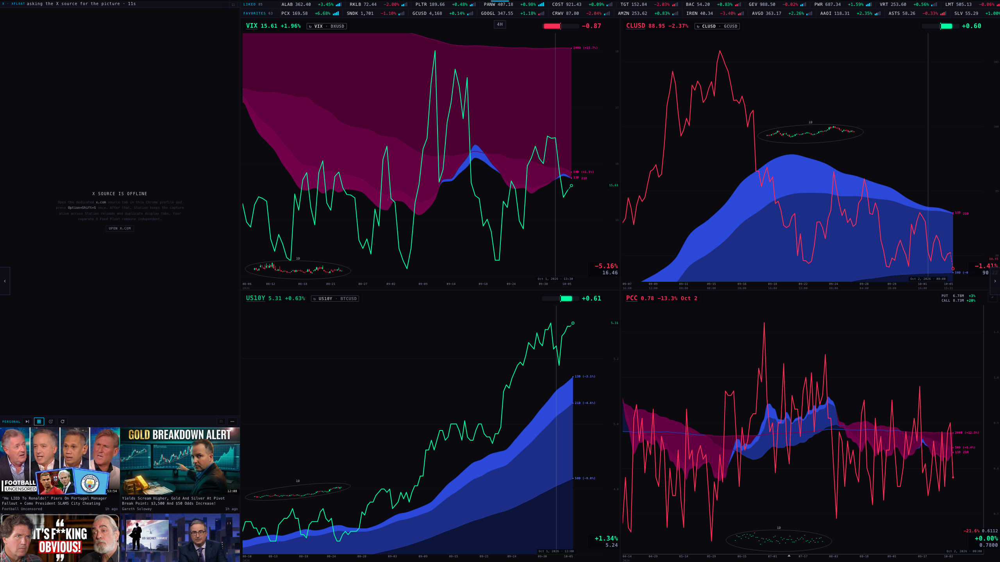
| Screen | Charts | Charts, share of the width | Each tape | The strip (2 tapes + 2 seams) | One chart | Black | Cut | Speed | Priced |
|---|---|---|---|---|---|---|---|---|---|
| MacBook 1680 × 1050 | 9 3 × 3 | 76% 1276 px; column 403 px | 22 px tall · 1276 px wide = the chart area's width; 0 px over the column | 46 px 4.4% of the height | 425 × 334 | 0 px | 0 | 45 / 45 px/s | 85 of 85 · 63 of 63 |
| MacBook 1680 × 1050 | 6 3 × 2 | 76% 1276 px; column 403 px | 22 px tall · 1276 px wide = the chart area's width; 0 px over the column | 46 px 4.4% of the height | 425 × 502 | 0 px | 0 | 45.2 / 45 px/s | 85 of 85 · 63 of 63 |
| MacBook 1680 × 1050 | 4 2 × 2 | 76% 1276 px; column 403 px | 22 px tall · 1276 px wide = the chart area's width; 0 px over the column | 46 px 4.4% of the height | 638 × 502 | 0 px | 0 | 45 / 45 px/s | 85 of 85 · 63 of 63 |
| Apple TV 1920 × 1080 | 9 3 × 3 | 76% 1458 px; column 461 px | 22 px tall · 1458 px wide = the chart area's width; 0 px over the column | 46 px 4.3% of the height | 485 × 344 | 0 px | 0 | 45 / 45 px/s | 85 of 85 · 63 of 63 |
| Apple TV 1920 × 1080 | 6 3 × 2 | 76% 1458 px; column 461 px | 22 px tall · 1458 px wide = the chart area's width; 0 px over the column | 46 px 4.3% of the height | 485 × 517 | 0 px | 0 | 45 / 45 px/s | 85 of 85 · 63 of 63 |
| Apple TV 1920 × 1080 | 4 2 × 2 | 76% 1458 px; column 461 px | 22 px tall · 1458 px wide = the chart area's width; 0 px over the column | 46 px 4.3% of the height | 729 × 517 | 0 px | 0 | 45 / 45 px/s | 85 of 85 · 63 of 63 |
| External 2560 × 1440 | 9 3 × 3 | 76% 1945 px; column 614 px | 22 px tall · 1945 px wide = the chart area's width; 0 px over the column | 46 px 3.2% of the height | 648 × 464 | 0 px | 0 | 45 / 45 px/s | 85 of 85 · 63 of 63 |
| External 2560 × 1440 | 6 3 × 2 | 76% 1945 px; column 614 px | 22 px tall · 1945 px wide = the chart area's width; 0 px over the column | 46 px 3.2% of the height | 648 × 697 | 0 px | 0 | 45 / 45 px/s | 85 of 85 · 63 of 63 |
| External 2560 × 1440 | 4 2 × 2 | 76% 1945 px; column 614 px | 22 px tall · 1945 px wide = the chart area's width; 0 px over the column | 46 px 3.2% of the height | 972 × 697 | 0 px | 0 | 45 / 45 px/s | 85 of 85 · 63 of 63 |
| Screen | One chart, tapes on | One chart, tapes off | The chart row gave up | Chart width changed | Column changed | Black, tapes off |
|---|---|---|---|---|---|---|
| MacBook | 425 × 334 | 425 × 349 | 46 px of height | 0 px | 0 px | 0 px |
| Apple TV | 485 × 344 | 485 × 359 | 46 px of height | 0 px | 0 px | 0 px |
| External | 648 × 464 | 648 × 479 | 46 px of height | 0 px | 0 px | 0 px |
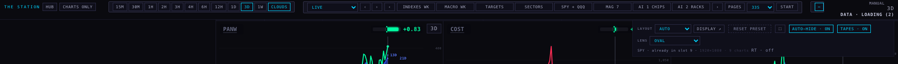
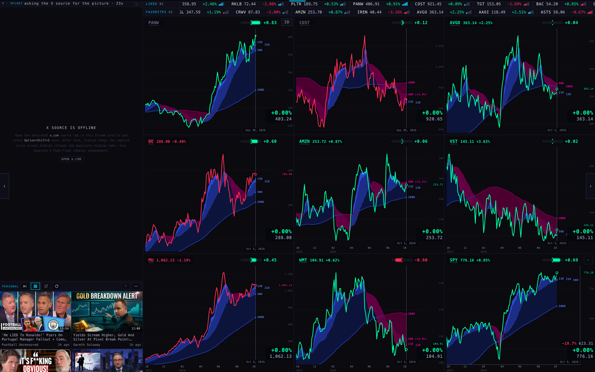
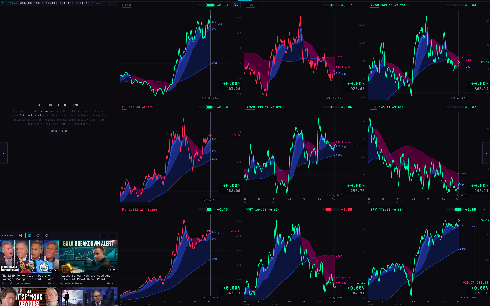
The lists today. LIKED shows 85 names, FAVORITES 63; names on both tapes: 0; a name twice on one tape: 0. Every name carried a price on every screen.
The tap, as measured. The wall was GOOGL · NBIS · AVGO · BE · AMZN · VST · MU · WMT · SPY. A tap on PANW put it in slot 1; a tap on COST put it in slot 2 and left slot 1 alone; SPY, already on the wall, was not loaded again ("SPY · already in slot 9"). With the pointer on a tape it moved 0 px in two seconds while the other tape kept running.
harness/s14.mjs → harness/s14.json, shots/s14-*.png (the real deck at 1680 × 1050 at device scale 2, 1920 × 1080 and 2560 × 1440; nine charts by hand, six = OTHER INDEXES · DAY, four = MACRO · 4H, the same walls S11 measured; every non-GET request blocked; the chart API fetched by node with the Hub's origin). Black = any gap that is not the Station's 1 px seam between two things, or any gap at the screen's edge. Cut = a chart or tape outside the screen, or a tape cell taller than its 22 px row. Type: cells 11 px, labels 8.5 px (the deck's own pane-label size). LIKED = hub_favorites minus the names on station_lists · favorites; prices SC_PROVIDER.marketQuotes (the read the charts' badges ride); Geiger equityGeiger / the retained non-equity row, the composite lighting 1–4 rungs (cyan up, red down). Slot rule: a name on the wall is not loaded twice; else the first empty slot; else the slots in turn from the first. Switch: localStorage station.tapes, on unless "0". Test: tests/station-s14-tapes-20261005.test.mjs. This section: harness/build-s14.py.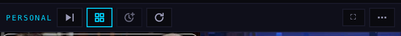
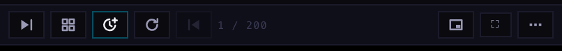
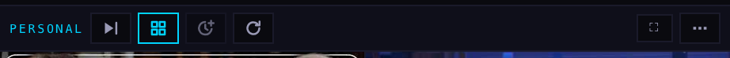
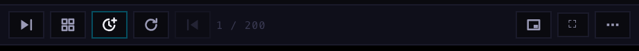
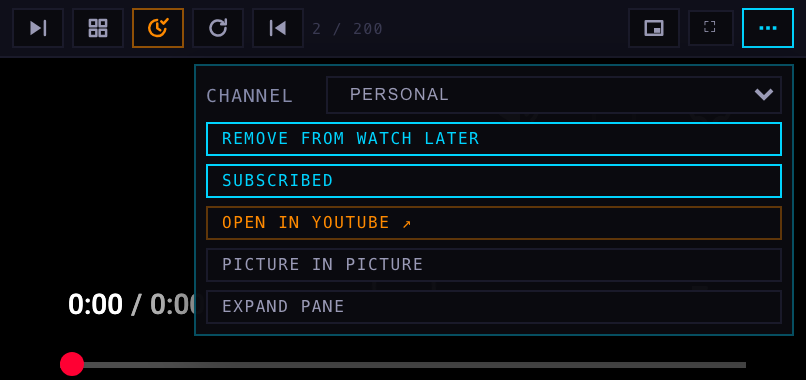
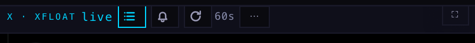
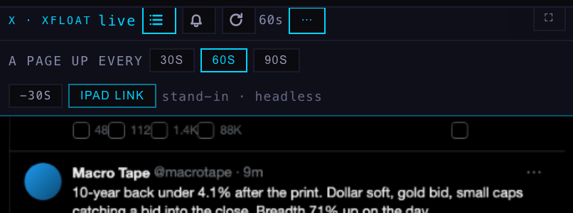
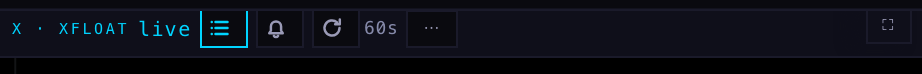
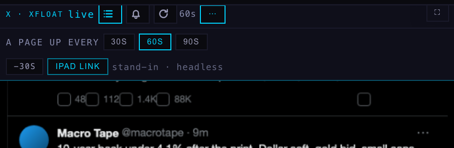
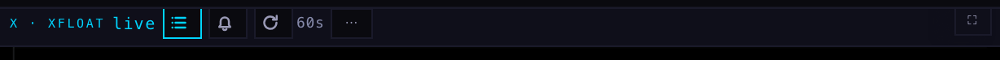
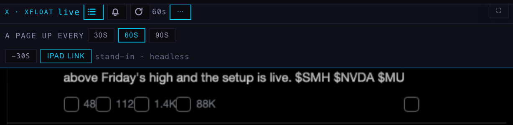


What happens on each refresh. The source does X's own refresh (the "See new posts" pill, else a re-tap of the tab already selected — exactly what ↻ does), then scrolls its own page to the top. In the run pictured: the post being read was Desk Notes at the top of the pane; after the page-up the two new posts are on top and Desk Notes is 238 px lower, still on screen. The whole turn took 788 ms, during which the stand-in's timeline was empty (0 posts at its emptiest) — the pane's picture did not change by one pixel until the new page was painted. If no post is painted within 3.5 s the source goes back to where it was and nothing changes.
| Screen | Column | YouTube bar, thumbnails | YouTube bar, playing | X bar | Cadence |
|---|---|---|---|---|---|
| MacBook 1680x1050 | 403 px | 7 items · one line · 0 cut · 0 squeezed · 167 px to spare | 9 items · one line · 0 cut · 0 squeezed · 118 px to spare | 8 items · one line · 0 cut · 0 overlapping | 60 s by default · chose 90 → shows 90s, kept |
| Apple TV 1920x1080 | 461 px | 7 items · one line · 0 cut · 0 squeezed · 225 px to spare | 9 items · one line · 0 cut · 0 squeezed · 176 px to spare | 8 items · one line · 0 cut · 0 overlapping | 60 s by default · chose 90 → shows 90s, kept |
| External 2560x1440 | 614 px | 7 items · one line · 0 cut · 0 squeezed · 378 px to spare | 10 items · one line · 0 cut · 0 squeezed · 278 px to spare | 8 items · one line · 0 cut · 0 overlapping | 60 s by default · chose 90 → shows 90s, kept |
| Icon | Name | What it does | Where |
|---|---|---|---|
| NEXT | the next video. On the thumbnails it starts the queue: the video after the last one watched, else the first | YouTube, always | |
| GRID | back to the thumbnails — from a playing video, and from the big theatre view too. Lit blue when you are already there (a tap then goes to the top of the list) | YouTube, always | |
| + WATCH LATER | adds the video that is playing — so after NEXT it is for the next one — or, on the thumbnails, the one the pointer is on (outlined orange) | YouTube, always | |
| IN WATCH LATER | the same button once saved: orange, with a tick. A tap removes it | YouTube | |
| REFRESH | YouTube: read the list again now. X: refresh now, newest posts to the top | both bars | |
| PREVIOUS | the video before this one; the numbers beside it are the place in the queue (2 / 200) | YouTube, while playing | |
| FLOAT | lift the playing video into its own small window | YouTube, while playing | |
| ⛶ | EXPAND | the video over the charts (and back) | both bars |
| MORE | YouTube: the channel switch (PERSONAL / SCINTILLA …), the filters (grid · videos · shorts · the lists), and a playing video's other actions. X: how often it refreshes, −30s, iPad link, the source | both bars | |
| LIST | the trading list | X | |
| NOTIFICATIONS | posts from the accounts with the bell on | X | |
| 60s | CADENCE | how often X refreshes by itself; change it behind ⋯ (30 / 60 / 90 seconds) | X, beside refresh |
Hold the pointer on any icon and it says its name in one line. Words were kept only where a picture would be a guess: TAP TO CONTINUE, the channel's name, the filter names, and the items inside the ⋯ (there is room for words there).
pageUpRefresh(), lifted from its source. It has not been run against the real x.com: how fast X repaints, and whether a re-tap of the selected tab still refreshes, are only known once 0.7.23 is loaded. The watch-later write was answered locally (2 per screen), so nothing was added to Alan's real list; every other write was blocked (29 per screen).harness/s13.mjs → harness/s13.json, shots/s13-*.png (deck at 1680 / 1920 / 2560, device scale 2). Test: tests/station-s13-tweaks-20261005.test.mjs. This section: harness/build-s13.py.What was cut, and why. The X picture is not framed by the Station: a helper in Alan's Chrome (the X Bridge) captures the real x.com tab and tells the pane which rectangle of it to show. That rule started the rectangle where the post's text starts — so the avatar rail, 52 px of a 598 px column, was never in the picture — and stopped 18 px short of the column's right edge, which is where x.com puts the ··· menu and the end of a long line. The pane itself draws the whole rectangle it is given, at every width (measured: the full rectangle lands inside the 403 / 461 / 614 px column with 6–8 px of black padding each side and nothing scrolled off). So the right-side loss was decided at the source, not in the column. The fix is in the bridge's rule: the rectangle is now the whole timeline column, border to border; the pane scales all of it to the column's width. The X pane's own bar also piled up: when the row ran short, the "live" state and the source's name were painted straight over the list and bell buttons. Every item now keeps its size, and −30 s · iPad link · pip · the source sit behind one ⋯.
How this was measured. The hidden browser cannot run the bridge and may never open a visible window, so a stand-in plays the x.com tab: a page with x.com's three columns at x.com's widths on a 1792 × 1080 window (the frame size the one live health row reports today), with the same DOM hooks the bridge reads. Its picture is fed to the real X shell as a video stream through the shell's own attach path, and the rectangle is computed by the bridge's own calculateCropRect() run on that page. Everything downstream of the pixels is real. On Alan's screen the posts are his; the proportions are these.
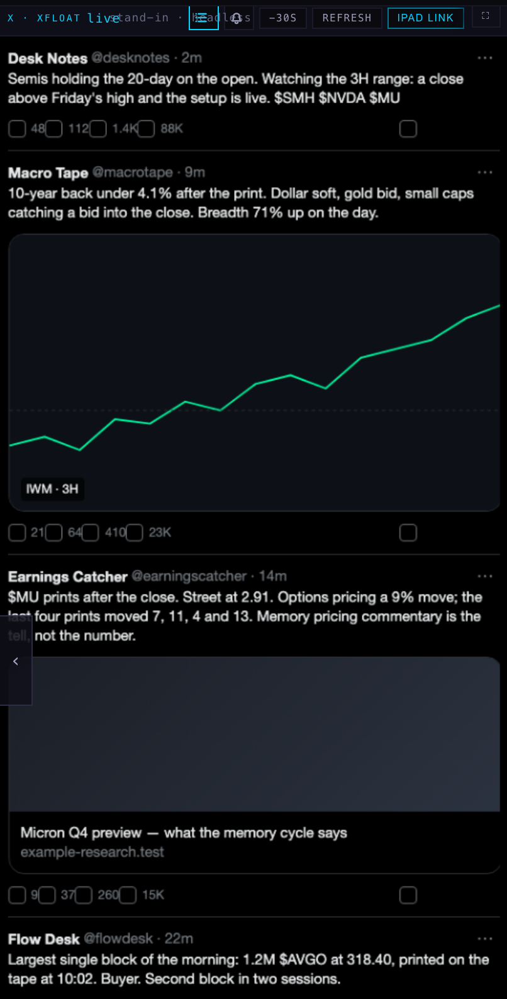
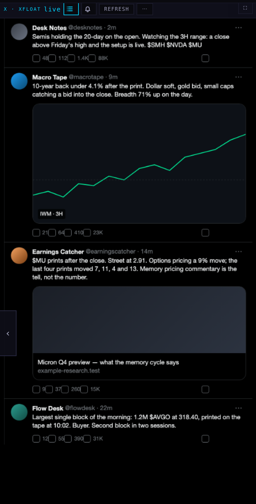
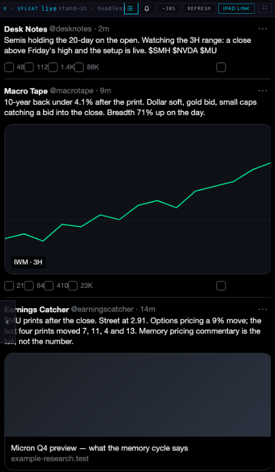
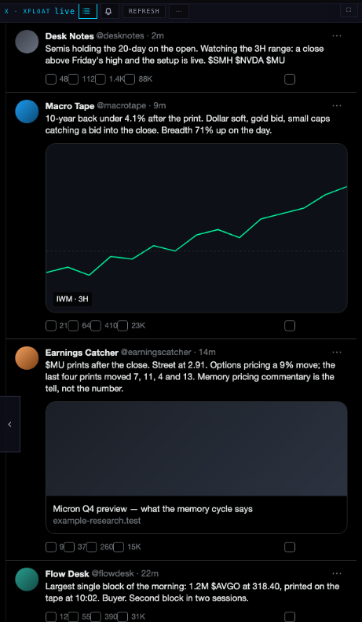
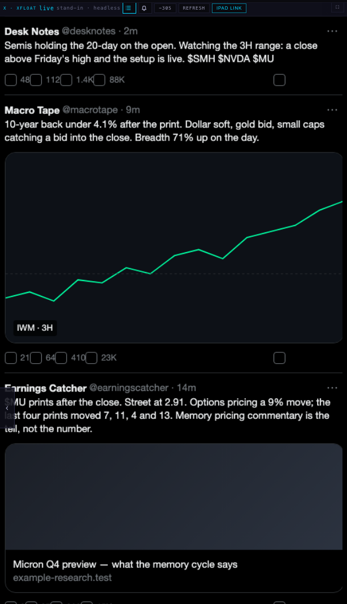
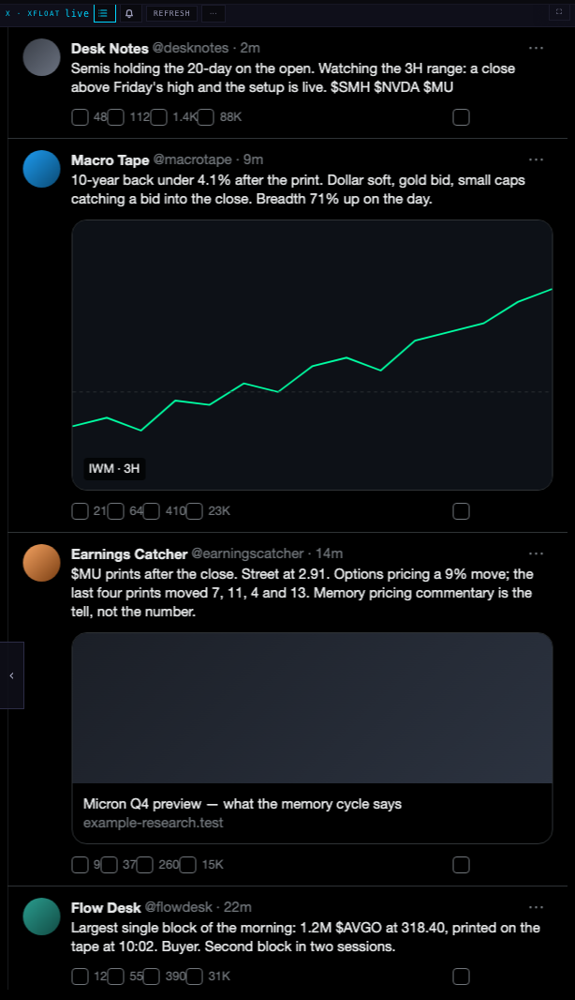
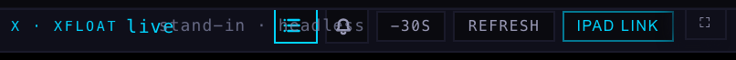
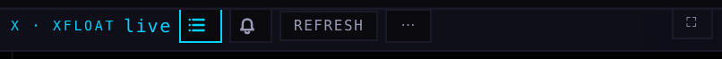
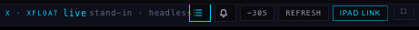
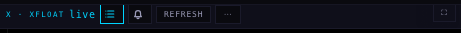
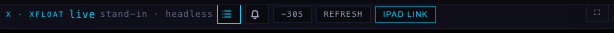
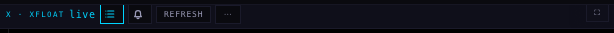
| Screen | Column | Shown before | Shown after | Post text height | The X bar |
|---|---|---|---|---|---|
| MacBook 1680x1050 | 403 px | 512 of 598 px avatar rail 52 px off the left · 18 px off the right (the ··· menu) | 598 of 598 px 0 px off either side | 11.5 → 9.8 px | 2 squeezed · 0 cut → 0 · 0 |
| Apple TV 1920x1080 | 461 px | 512 of 598 px avatar rail 52 px off the left · 18 px off the right (the ··· menu) | 598 of 598 px 0 px off either side | 13.1 → 11.2 px | 1 squeezed · 0 cut → 0 · 0 |
| External 2560x1440 | 614 px | 512 of 598 px avatar rail 52 px off the left · 18 px off the right (the ··· menu) | 598 of 598 px 0 px off either side | 17.5 → 15 px | 0 squeezed · 0 cut → 0 · 0 |
| iMac window (as the health row reports it today) 1167x662 | 280 px | 512 of 598 px avatar rail 52 px off the left · 18 px off the right (the ··· menu) | 598 of 598 px 0 px off either side | 8 → 6.8 px | 0 squeezed · 1 cut → 0 · 0 |
"Shown" is how much of the 598 px timeline column lands in the pane. "Post text height" is x.com's 15 px body text as drawn in the column: the whole column at 403 px is smaller type than the trimmed one was. That is the trade: nothing lost, or bigger type — Alan's words were the former.
What the bridge change needs: the bridge is an extension in Alan's Chrome and Brave, so after the merge each browser reloads it once (↻ on the extensions page, then ⌥⇧S). The health page now expects 0.7.22 and says "needs ↻ + ⌥⇧S" against any browser still on 0.7.21.
The layout chosen: the critical controls on the bar, the filters one tap away. The bar now holds the channel switch (PERSONAL ▾ / SCINTILLA ▾ …), REFRESH (↻), one chip that names the filters in force (VIDEOS · SUBSCRIBED ▾), and ⛶. Tapping the chip opens the filter row — GRID · VIDEOS · SHORTS | the lists — under the bar, over the thumbnails; a choice applies and folds the row; Esc folds it. While a video plays the chip and ↻ step aside and the player keeps its own transport (prev · next · •••), so nothing sits over the picture. Why not a swipeable row: at 403 px a swipeable row hides whatever is off-screen, and that is often the active filter — you cannot see what the grid is showing you. The named chip always says it.
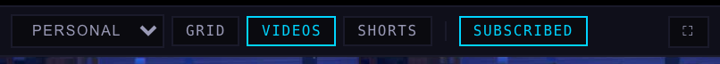
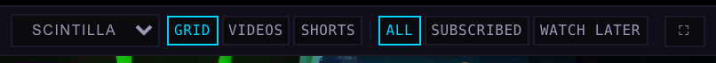
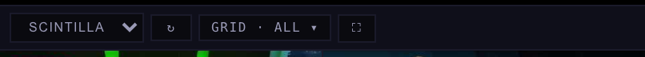
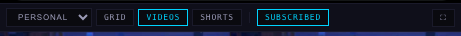
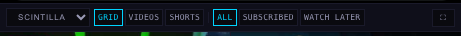
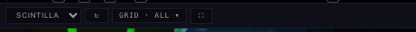
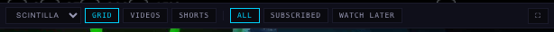
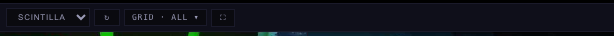
| Screen | Feed | The row before | The row after |
|---|---|---|---|
| MacBook 1680x1050 | PERSONAL | PERSONAL · grid · videos · shorts · subscribed · ⛶ one line, nothing cut | PERSONAL · ↻ · ⛶ one line, nothing cut |
| SCINTILLA | SCINTILLA · grid · videos · shorts · all · subscribed · watch later · ⛶ one line, nothing cut · compact | SCINTILLA · ↻ · ⛶ one line, nothing cut · the row opens inside the pane: grid · videos · shorts · all · subscribed · watch later | |
| Apple TV 1920x1080 | PERSONAL | PERSONAL · grid · videos · shorts · subscribed · ⛶ one line, nothing cut | PERSONAL · ↻ · ⛶ one line, nothing cut |
| SCINTILLA | SCINTILLA · grid · videos · shorts · all · subscribed · watch later · ⛶ one line, nothing cut · compact | SCINTILLA · ↻ · ⛶ one line, nothing cut · the row opens inside the pane: grid · videos · shorts · all · subscribed · watch later | |
| External 2560x1440 | PERSONAL | PERSONAL · grid · videos · shorts · subscribed · ⛶ one line, nothing cut | PERSONAL · ↻ · ⛶ one line, nothing cut |
| SCINTILLA | SCINTILLA · grid · videos · shorts · all · subscribed · watch later · ⛶ one line, nothing cut | SCINTILLA · ↻ · ⛶ one line, nothing cut · the row opens inside the pane: grid · videos · shorts · all · subscribed · watch later | |
| iMac window (as the health row reports it today) 1167x662 | PERSONAL | PERSONAL · grid · videos · shorts · subscribed · ⛶ one line, cut: subscribed · compact · scrolling | PERSONAL · ↻ · ⛶ one line, nothing cut |
| SCINTILLA | SCINTILLA · grid · videos · shorts · all · subscribed · watch later · ⛶ one line, cut: subscribed, watch later · compact · scrolling | SCINTILLA · ↻ · ⛶ one line, nothing cut · the row opens inside the pane: grid · videos · shorts · all · subscribed · watch later |
What the tapes are. LIKED = the Hub's liked names (the ♥, 148 today). FAVORITES = the Station's favorites list (63 today). The LIKED tape shows only the liked names that are not on FAVORITES (85 today), so a name is on one tape, never both. A cell is ticker · price · change % · the Geiger mark (four rungs lit from the composite: cyan up, red down) and a price that ticks flashes once — the scintilla. 45 px a second whatever the length, pause on hover; tap a cell and that chart opens in a slot. Real quotes from the chart API, the real lists, on a throwaway page that mocks the floor plan (the charts are placeholders carrying the real price and change).
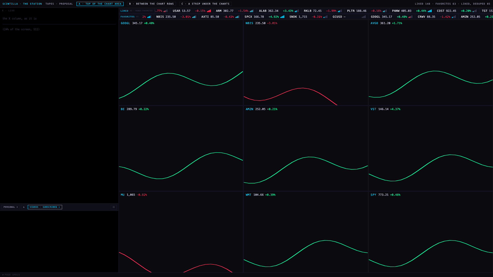
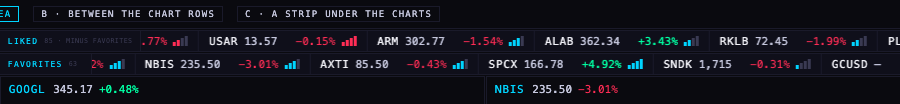
| Variant | Screen | Charts, share of the width | The two tapes | One chart | The lists | Priced |
|---|---|---|---|---|---|---|
| A · at the top of the chart area | Apple TV 1920x1080 | 75.9% | 44 px · 4.1% of the height | 485 × 334 348 tall without the tapes | liked 148 · favorites 63 · liked, deduped 85 | 85 of 85 priced |
| A · at the top of the chart area | MacBook 1680x1050 | 75.9% | 44 px · 4.2% of the height | 425 × 324 338 tall without the tapes | liked 148 · favorites 63 · liked, deduped 85 | 85 of 85 priced |
| B · between the chart rows | Apple TV 1920x1080 | 75.9% | 44 px · 4.1% of the height | 485 × 334 348 tall without the tapes | liked 148 · favorites 63 · liked, deduped 85 | 85 of 85 priced |
| B · between the chart rows | MacBook 1680x1050 | 75.9% | 44 px · 4.2% of the height | 425 × 324 338 tall without the tapes | liked 148 · favorites 63 · liked, deduped 85 | 85 of 85 priced |
| C · a strip under the charts | Apple TV 1920x1080 | 75.9% | 44 px · 4.1% of the height | 485 × 334 348 tall without the tapes | liked 148 · favorites 63 · liked, deduped 85 | 85 of 85 priced |
| C · a strip under the charts | MacBook 1680x1050 | 75.9% | 44 px · 4.2% of the height | 425 × 324 338 tall without the tapes | liked 148 · favorites 63 · liked, deduped 85 | 85 of 85 priced |
harness/s12.mjs before|after (the deck at 1680 / 1920 / 2560 and the iMac window; the stand-in at harness/x-standin.html, fed through attachXFloatStream; the crop by the bridge's calculateCropRect) → s12-before.json, s12-after.json, shots/. Tapes: harness/tapes.mjs → tapes.json; the page is tapes/index.html?v=top|between|foot. Test: tests/station-s12-controls-20261005.test.mjs. This page: harness/build-page.py.